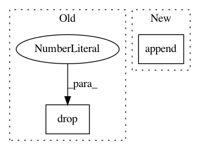

aeaeb8c961e99d60b60a65e519e4b0c61747942c,lifelines/fitters/__init__.py,RegressionFitter,_compute_central_values_of_raw_training_data,#RegressionFitter#Any#Any#Any#,1196
Before Change
// apply this function within each stratified dataframe
central_stats = []
for stratum, df_ in df.groupby(strata):
central_stats.append(self._compute_central_values_of_raw_training_data(df_, name=stratum).drop(strata, axis=1))
return pd.concat(central_stats)
else:
After Change
central_stats_ = central_stats_.drop(strata, axis=1)
except:
pass
central_stats.append(central_stats_)
v = pd.concat(central_stats)
v.index.rename(utils.make_simpliest_hashable(strata), inplace=True)
return v
In pattern: SUPERPATTERN
Frequency: 3
Non-data size: 2
Instances
Project Name: CamDavidsonPilon/lifelines
Commit Name: aeaeb8c961e99d60b60a65e519e4b0c61747942c
Time: 2020-08-04
Author: cam.davidson.pilon@gmail.com
File Name: lifelines/fitters/__init__.py
Class Name: RegressionFitter
Method Name: _compute_central_values_of_raw_training_data
Project Name: sebp/scikit-survival
Commit Name: adb2f55d8629b588bba17a5232946b2245c157fc
Time: 2017-07-23
Author: sebp@k-d-w.org
File Name: tests/test_preprocessing.py
Class Name:
Method Name: encoded_data
Project Name: analysiscenter/batchflow
Commit Name: fa0c013fc201cebf5c9aceb0098cf7cc9094a34f
Time: 2020-04-02
Author: dimonovez@gmail.com
File Name: batchflow/utils.py
Class Name:
Method Name: print_results